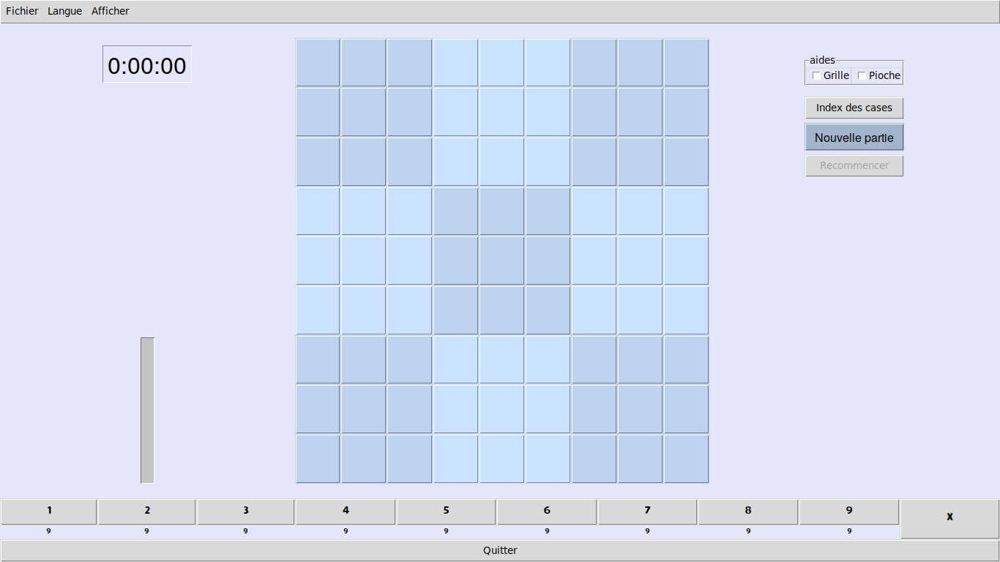
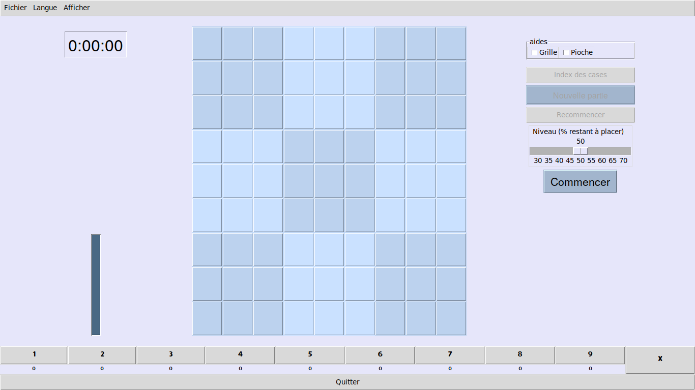

Diplôme Inter-Universitaire
Projet Sudoku
Table des matières
1 Consignes
Production d'un rapport de 20 pages maximum : expliquer l'interface homme-machine, expliquer le code, expliquer la démarche et les difficultés rencontrées, extraction d'activités NSI en séances (hors projets filés) en lien avec les compétences décrites dans le programme NSI de Première.
2 Interface homme-machine
2.1 Au démarrage
Au démarrage (figure 1) la grille de Sudoku apparaît vide au centre de la fenêtre. Sur la gauche, la jauge de remplissage est vide. La pioche, au bas de la fenêtre, indique que neuf symboles de chaque sorte restent à placer sur la grille.
Sur la droite, un bouton Nouvelle partie de couleur distinctive permet d'amorcer une nouvelle partie.

Figure 1 : au démarrage
2.2 Nouvelle partie
La grille est tirée de façon aléatoire et secrète. La pioche, au bas de la fenêtre (figure 2) est vide: elle indique que tous les symboles ont été placés sur la grille. Sur la gauche, la jauge de remplissage est pleine. Sur la droite, un curseur est apparu, il permet de choisir le niveau de difficulté. Un bouton Commencer de couleur distinctive permet au joueur de commencer la partie.

Figure 2 : choix du niveau
2.3 Début de partie
La grille pleine est vidée aléatoirement jusqu'à atteindre le niveau souhaité par le joueur. La jauge de remplissage et la pioche se retrouvent partiellement remplies. La grille est révélée au joueur et les cases dors et déjà remplies sont gelées : le joueur ne peut ni les effacer ni les modifier. Sur la gauche, le chronomètre mis en marche décompte le temps qui s'écoule.

Figure 3 : début de partie
2.4 Placer un symbole sur la grille
Pour placer un symbole sur la grille, le joueur commence par sélectionner le symbole qu'il souhaite placer soit en le choisissant sur la grille, soit en le choisissant dans la pioche. Le symbole sélectionné apparaît alors d'une couleur distinctive (figure 4).

Figure 4 : sélectionner un symbole
Le joueur clique alors sur une case vide pour y placer le symbole. Si la case est susceptible d'accepter le symbole celui est placé (figure 5). La pioche et la jauge de remplissage évoluent en conséquence.

Figure 5 : placer un symbole
2.5 Effacer un symbole de la grille
Pour effacer un symbole, le joueur sélectionne le bouton d'effacement X à droite de la pioche. Ce bouton apparaît alors en rouge (figure 6). Ce bouton agit en bascule: si le joueur clique dessus une nouvelle fois, on sort du mode effacement. On peut aussi en sortir en sélectionnant un autre symbole.
Quand le mode effacement est actif, à chaque fois que le joueur clique sur une case pleine de la grille, celle-ci est effacée. La pioche et la jauge de remplissage évoluent en conséquence.

Figure 6 : effacer un symbole
5: # coding: UTF-8 6: # Jeu de Sudoku 7: # Auteur : Raoul HATTERER 8: 9: # Pour debugger: 10: # import pdb 11: # pdb.set_trace() 12: #import pdb, traceback, sys 13: 14: # Chargement des modules 15: from tkinter import Tk, ttk, Frame, Button, Label, Message, LabelFrame, Scale,\ 16: Checkbutton, IntVar, StringVar, Menu, BooleanVar, Toplevel 17: from tkinter.constants import TOP, X, BOTTOM, LEFT, BOTH, RIGHT,\ 18: DISABLED, ACTIVE, NORMAL, SUNKEN 19: from random import choice, randrange 20: from datetime import datetime 21: from itertools import combinations 22: from tkinter.filedialog import askopenfile, asksaveasfile 23: from tkinter.messagebox import showerror 24: from csv import reader 25: from webbrowser import open_new 26: 27: 28: # localisation 29: langue = 'fr' 30: 31: # CLASSES 32: 33: class Case(Button):